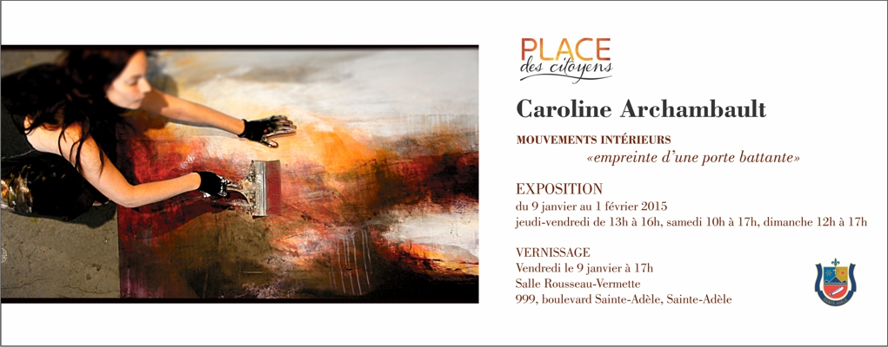

Commissaire de l'exposition Johanne Martel

Caroline Archambault
MOUVEMENTS INTÉRIEURS
Dès le début des années 90, Mme Archambault organise des expositions et des performances in situ où elle s’intéresse au mouvement du corps dans l’espace. Pratiquant à cette époque le mouvement authentique et la danse contemporaine, elle commence à intégrer le geste à sa peinture, ce sont alors les balbutiements de son travail abstrait.

Elle y travaillera une dizaine d’années avant de partager ses recherches. La première exposition de son travail abstrait à Montréal fût accueillie avec succès. Depuis ce temps, Mme Archambault continue de présenter son travail en participant à plusieurs expositions locales et internationales dont entre autre l’exposition «Québec-Japon» , «les artistes québécois» à la maison du Québec au jeux olympiques de Vancouver, l’exposition «L’abstraction au féminin» à Montréal et plusieurs autres expositions solo ou de groupe.


Caroline Archambault est présentement représentée par la galerie Michel-Ange et la galerie L’Harmattan.

Conception Johanne Martel www.magadam.com .